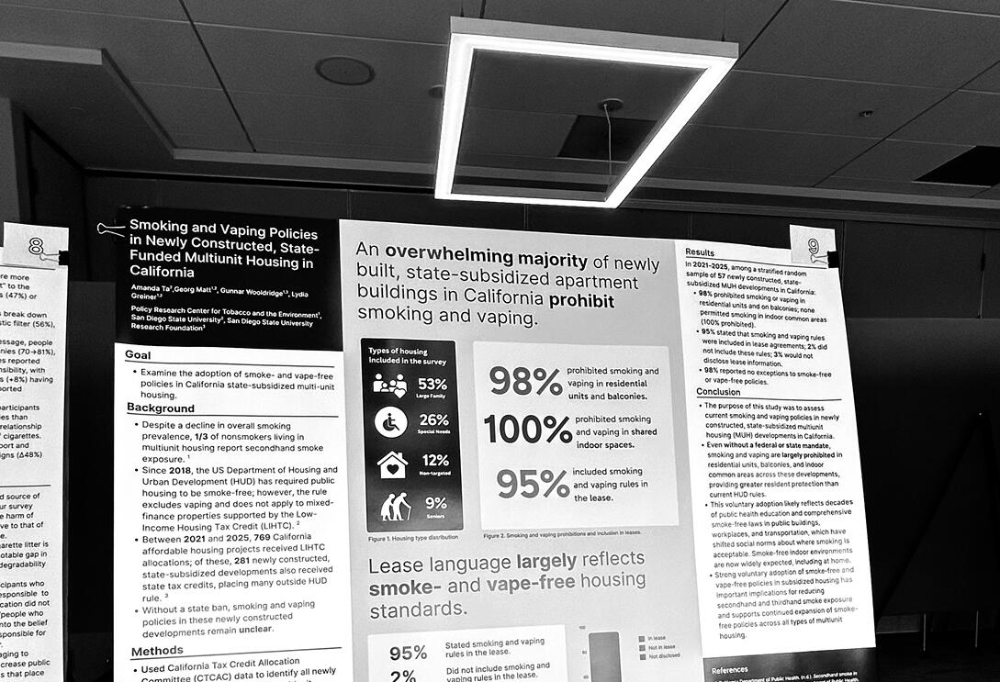

Amanda Ta
Psychology & Research @SDSU
About Me
The button below tells you a little bit about me outside of research and academics!You should totally click.
Research
Aspiring clinical psychologist and scientist. Psychology & research @ San Diego State University (SDSU). My work and interests involve public housing tobacco/vaping policies and EEG-based cognitive neuroimaging. Big fan of the internet.

About Me
I have always wanted to be a clinical scientist.Both of my parents are first generation immigrants whose first language was not English. A childhood spent in a lower class Viet American household, upon learning to navigate novel systems that my parents were unfamiliar with, made salient to me how cultural norms and limited mental health education within Southeast Asian communities shaped both the expression of distress and the willingness to seek care in immigrant families. I slowly learned to navigate the American schooling system with my family, learning both Vietnamese and English in the household with native understanding simultaneously.These experiences combined with the witnessing of longterm benefits of therapy and medication in my own family marked my first introduction to the field of psychology. This led me to ask not only how treatment works, but also for whom and under what environmental and cultural conditions mental health outcomes can improve.During the fall of 2025, I worked on a research project under the mentorship of Dr. Lydia Greiner at my university’s Center for Tobacco and the Environment. We aimed to examine the adoption of smoke- and vape-free policies in California state-subsidized housing. I analyzed public housing and survey data, sorted qualitative interview data into codes, and examined policy enforcement and disclosure. I presented my findings at the 2026 San Diego State University Student Symposium (S^3). Through this project I had not only gained a deeper understanding of how environmental factors, such as tobacco smoke exposure, shape behavioral and mental health disparities in low-income communities, but developed skills in effectively explaining my research findings and interacting with a range of audiences.I’m a psychology researcher and student at San Diego State University and my areas include environmental and policy factors along with measuring cognitive control with EEG technology. I like web and graphic design, and my favorite abstract strategy board game is Reversi (Othello).
__TEXT01__
ACADEMIC PRESENTATIONSTa, A., Matt, G. E., Wooldridge, G., & Greiner, L. (2026). Smoking and vaping policies in newly constructed, state-funded multiunit housing in California. [Poster presentation]. Third Annual Research Symposium on Tobacco and the Environment, Southeast Live Well Center, San Diego, CATa, A., Matt, G. E., Wooldridge, G., & Greiner, L. (2026). Smoking and vaping policies in newly constructed, state-funded multiunit housing in California [Poster presentation]. SDSU Student Symposium (S3), San Diego State University, San Diego, CAPROJECTS02/2026 SAN DIEGO: Present Neural Correlates of Cognitive Control in Healthy Adults (ongoing)Cognitive Affective Psychopathology & Psychophysiology Lab at Kappenman Laboratory, San Diego State UniversityMentor: Dr. Emily Kappenman, PhDI prepared and documented raw EEG datasets for preprocessing and analysis, collected and managed EEG datasets from healthy adult participants during a cognitive control task, and monitored task performance and ensured high-quality EEG signal acquisition during experimental sessions.09/2025 - 05/2026 KEARNY MESA: Tobacco smoke remediation practices in San Diego County (ongoing)Policy Center for Tobacco and the Environment (CTE), San Diego State UniversityMentors: Dr. Georg Matt, PhD, Dr. Lydia Greiner, DrPH, and in collaboration with Samantha Yurek.I prepared a full report of background and methods sections for a mixed-methods study investigating residential tobacco smoke remediation practices and thirdhand smoke contamination, after developing a database of 100 remediation and cleaning businesses and certified professionals using IICRC records, business directories, and public databases. I also contributed to recruitment protocol design and implemented purposive and snowball sampling strategies to recruit professionals with tobacco smoke remediation experience.Smoking and vaping policies in newly constructed, state-funded multiunit housing in California
Policy Research Center For Tobacco and the Environment, San Diego State UniversityMentors: Dr. Georg Matt, PhD, Dr. Lydia Greiner, DrPH, and in collaboration with Gunnar Wooldridge.I integrated administrative and survey data from 281 newly constructed state-subsidized housing developments to evaluate implementation of smoking and vaping policies, and conducted structured qualitative coding of interview and survey data to operationalize smoking and vaping lease policies and enforcement procedures into thematic categories. I also synthesized survey responses from 57 California affordable housing properties to identify patterns in lease policy inclusion and enforcement and Interpreted findings to identify inconsistencies, ambiguous enforcement mechanisms, and gaps in lease disclosure.I was awarded for a top poster presentation in the College of Sciences at the 2026 SDSU Student Symposium (S^3), and additionally presented at the Third Annual Research Symposium on Tobacco and the Environment, where I presented my findings on smoke and vape policies in multiunit, state-subsidized housing in California.HONORS• Certificate of Recognition, Third Annual Research Symposium on Tobacco and the Environment (2026)
Recognition of poster presentation at the 3rd Annual Research Symposium on Tobacco and the Environment• Dean’s Award for Top Poster Presentation, SDSU College of Sciences (2026)
Awarded for one of the top two poster presentations at the 2026 SDSU Student Symposium (S³)• SDSU Merit Scholarship, San Diego State University (2024-28)
4-year full tuition scholarship for outstanding local incoming studentsSKILLS• Software: R, PyCorder, SPSS, Overleaf, Excel
• Statistics: Descriptive statistics, t-tests, ANOVA, correlation, linear regression (SPSS)
• Methodology: EEG, Qualitative coding (thematic analysis), Survey & Interview design, Database Development
• Public Health & Policy Factors
Policy Research Center For Tobacco and the Environment, San Diego State UniversityMentors: Dr. Georg Matt, PhD, Dr. Lydia Greiner, DrPH, and in collaboration with Gunnar Wooldridge.I integrated administrative and survey data from 281 newly constructed state-subsidized housing developments to evaluate implementation of smoking and vaping policies, and conducted structured qualitative coding of interview and survey data to operationalize smoking and vaping lease policies and enforcement procedures into thematic categories. I also synthesized survey responses from 57 California affordable housing properties to identify patterns in lease policy inclusion and enforcement and Interpreted findings to identify inconsistencies, ambiguous enforcement mechanisms, and gaps in lease disclosure.I was awarded for a top poster presentation in the College of Sciences at the 2026 SDSU Student Symposium (S^3), and additionally presented at the Third Annual Research Symposium on Tobacco and the Environment, where I presented my findings on smoke and vape policies in multiunit, state-subsidized housing in California.HONORS• Certificate of Recognition, Third Annual Research Symposium on Tobacco and the Environment (2026)
Recognition of poster presentation at the 3rd Annual Research Symposium on Tobacco and the Environment• Dean’s Award for Top Poster Presentation, SDSU College of Sciences (2026)
Awarded for one of the top two poster presentations at the 2026 SDSU Student Symposium (S³)• SDSU Merit Scholarship, San Diego State University (2024-28)
4-year full tuition scholarship for outstanding local incoming studentsSKILLS• Software: R, PyCorder, SPSS, Overleaf, Excel
• Statistics: Descriptive statistics, t-tests, ANOVA, correlation, linear regression (SPSS)
• Methodology: EEG, Qualitative coding (thematic analysis), Survey & Interview design, Database Development
• Public Health & Policy Factors